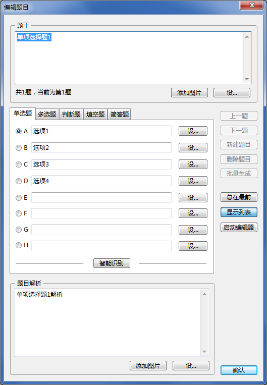

编辑题目
编辑题目

在主界面右侧窗格中选中若干个需要编辑的题目，然后进行编辑。在编辑状态下，“新建题目”“删除题目”“批量生成”功能均为禁用状态。
 | 选中的题目组不会进入编辑状态。 |
|---|
若在题库页面选取题目并进行编辑，允许对题目的类型进行修改；若在类型页面选取题目并进行编辑，不允许对题目的类型进行修改
| 若需要编辑自定义类型题目，必须在各自定义类型对应的类型窗格中进行选取；若在题库窗格中选取了若干自定义类型题目，则编辑功能不可用。
编辑后题目的收藏状态不变。 |
|---|
在编辑状态下，“新建题目”“批量生成”均为无效状态。
编辑结束后，点击“确认”保存所有修改，退出界面，并将所有修改在题库中生效。
| 若部分题目编辑后不符合有效题目的要求，视为未编辑过这些题目。
|
|---|
不点击“确认”而退出视为未编辑任何题目。
GX Software 2020-2021
V2.0